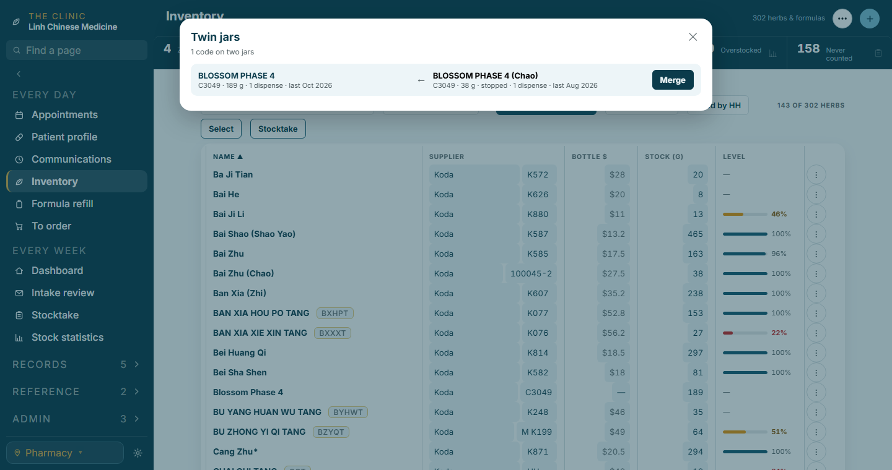
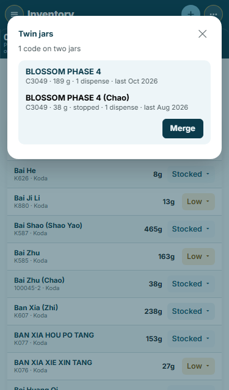
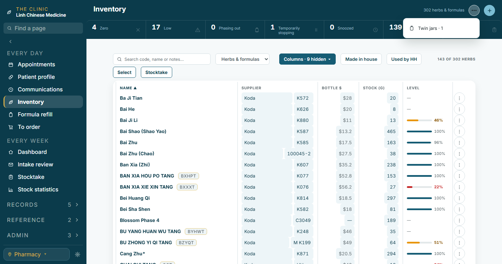
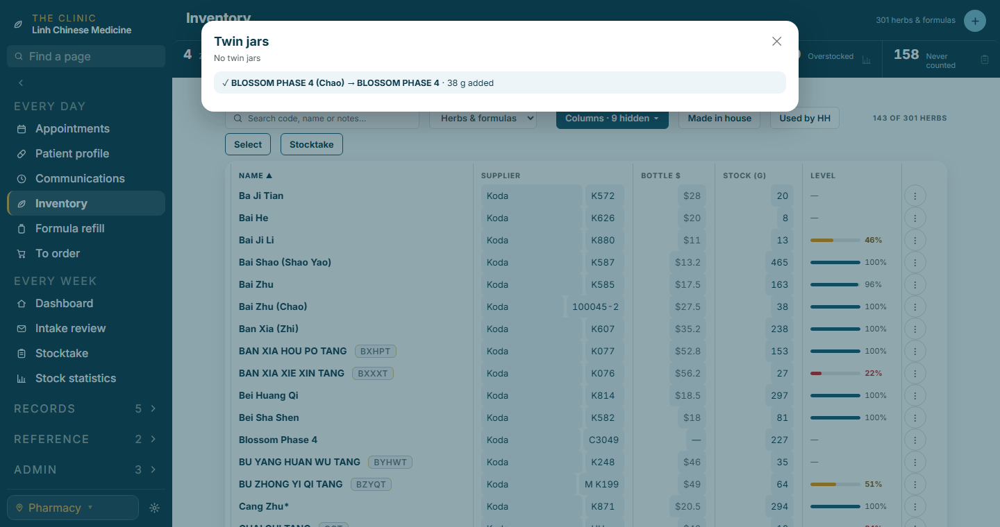
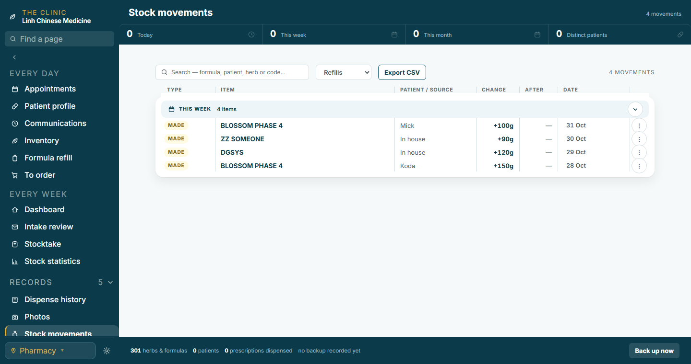
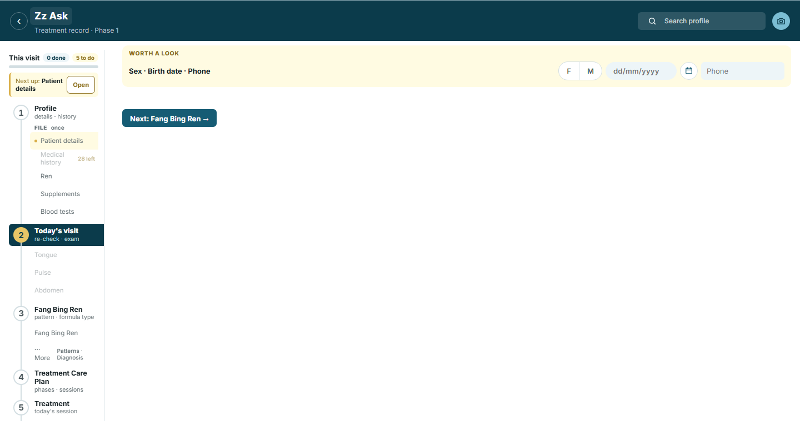
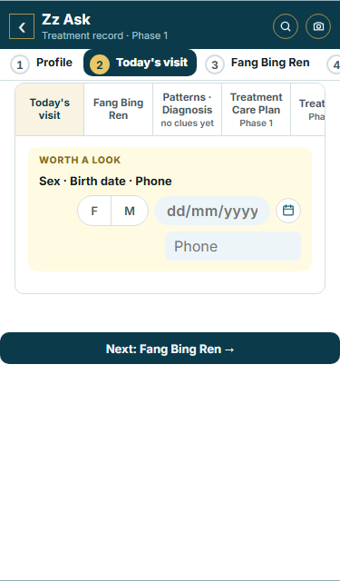
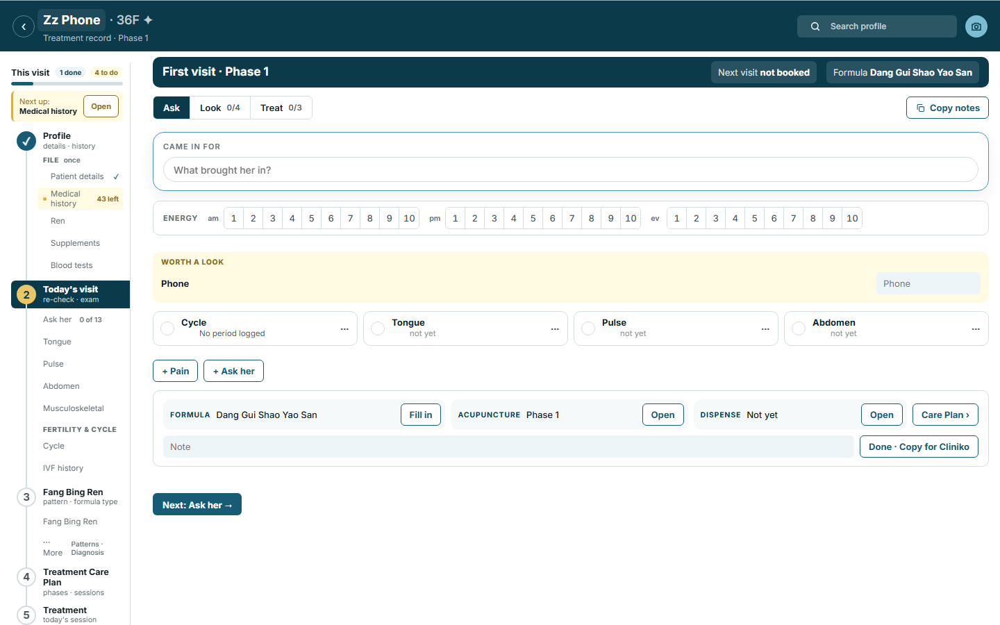

Your twelve picks, built and tested in the sandbox. The pictures are the real app with made-up records (no patient names). Nothing is live until your "push live".
The ⋯ menu shows Twin jars · n only while a supplier code sits on two jars. The sheet lists each pair: the jar the rule keeps on the left (not stopped, then stock on it, then the latest dispense), the twin on the right. Merge adds the twin's grams onto the keeper, moves every record that named the twin (dispenses, stocktakes, arrivals, an open count) and keeps the twin's name as a quiet alias so an old prescription line still lands on the one jar. One ✓ line per merge in the sheet, Undo in the toast.




Found on the way the sheet finds seven pairs on your records, not six: the seventh is GUI ZHI FU LING WAN (Chi Shao) · (Bai Shao), two deliberate variants on one Mick code, the Chi Shao one stopped at 0 g. The rule would keep the Bai Shao jar; your call whether that row is merged or left.
The Source column reads the maker for every batch: the entry's own source where one was logged (Mick), the jar's source for a batch into one of your jars (Koda), In house for a patient's batch or a nickname. Worked out when the page draws; the old entries are not touched. The three make paths record it from now.

One line in Worth a look names what is missing (Sex · Birth date · Phone) with the Patient details fields beside it, 32 px each. A patient with no sex or birth date lands on the profile's Start here card as before; Today's visit now opens on this line instead of drawing nothing. Once the fields are in, the line goes and the page draws itself.



No picture: the rows simply leave Due. A review or check-in whose patient got new herbs after it is left out when the list is built (the Dashboard strip and the nav badge read the same list), so the 18 reviews and 4 check-ins vanish the moment the build opens on your records. Nothing is written.